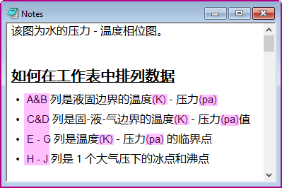
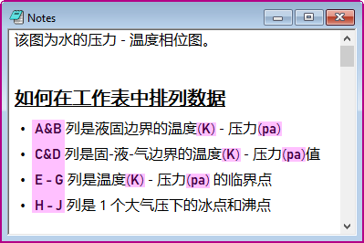

Origin のプロジェクトファイルには、テキスト、記号、矢印などのさまざまな文字や英語（ラテンアルファベット）や中国語（表語文字）など様々な語句を混在させることができます。場合によってはそれぞれのデフォルトフォントをグローバルに制御したいことがあります。このような場合に、特別なデフォルトフォントダイアログが導入されています。ギリシャ文字の記号などの文字の種類応じてデフォルトのフォントを設定すると、さまざまな箇所 (グラフ、ノート、ワークシートなど) のフォントが、その設定に応じて更新されます。
| 数学記号 | シンボルマップの数学タブで挿入できる数学記号のデフォルトのフォントを制御します。 |
|---|---|
| 矢印/その他の記号 | シンボルマップの矢印およびその他タブで挿入できる記号のデフォルトのフォントを制御します。 |
| Unicode ギリシャ文字 | シンボルマップのギリシャ文字タブで挿入できる記号のデフォルトのフォントを制御します。 |
| 固定幅 | 主にスクリプトで使用します。 |
| アジア | 日本語、中国語などのアジア圏の言語で使用します。 |
| 西洋 | 英語以外の環境でラテン語の文字のフォントを設定するために使用されます。 |
Note: 上記の表にあるように、このダイアログは主にシンボルマップで、または混合フォントのエスケープコードとして使用されます。ツールバーでのデフォルトのフォントを設定したい場合は、環境設定: オプションダイアログ > テキストフォントタブを使用してください。
ノートウィンドウで中国語と英語が混ざった内容を記述するとします。ラテン文字のフォントを次のように指定できます。
\f:e(Latin Characters)
下図で、特別なデフォルトフォントダイアログで指定したフォントによって表示が変わるのが確認できます。
| デフォルトフォントの設定 | |
|
|---|---|---|
| 表示 |  |  |